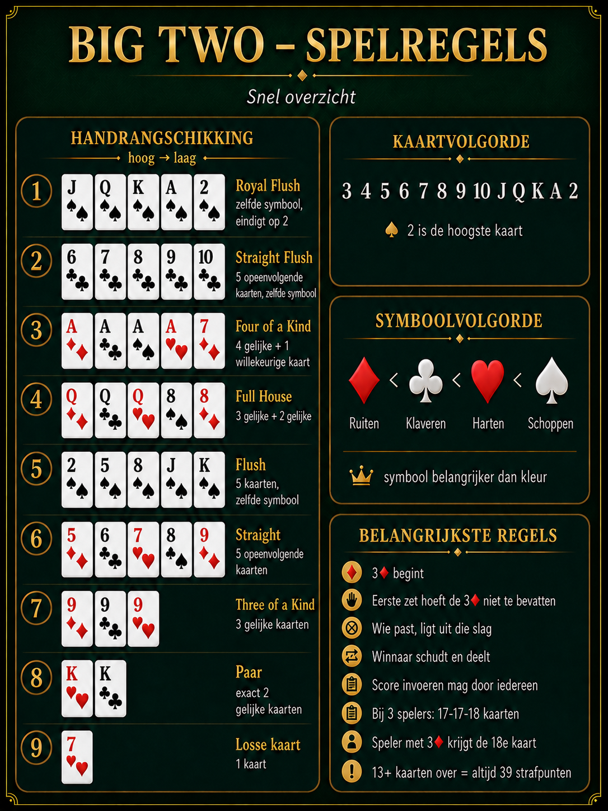

Ranglijst
Stand
| # | Speler | Gem. straf | Potjes | Gewonnen | Winst% | Straf totaal |
|---|
Laatste uitslagen
Recente potjes
Nog geen potjes ingevoerd.
Snel overzicht
Spelregels

📖 Volledige spelregels tonen
1. Doel van het spel
Het doel is om als eerste al je kaarten kwijt te raken. De speler die als eerste geen kaarten meer heeft, wint het potje.
2. Schudden en delen
De winnaar van het vorige potje is de dealer van het volgende potje. De dealer verzamelt, schudt en deelt de kaarten naar eigen inzicht. De kaarten hoeven niet verplicht één voor één te worden gedeeld. Bij het eerste potje bepalen de spelers onderling wie dealer is.
3. Spelen met vier spelers
Bij vier spelers krijgt iedere speler 13 kaarten. Alle 52 kaarten worden verdeeld.
4. Spelen met drie spelers
Bij drie spelers worden de kaarten verdeeld als 17–17–18. De speler die de 3♦ ontvangt, krijgt ook de overgebleven kaart en heeft daardoor 18 kaarten.
5. Begin van het potje
De speler met de 3♦ begint. De eerste kaart of combinatie hoeft de 3♦ niet te bevatten. De speler mag de 3♦ bewaren en later in het potje gebruiken.
6. Kaartvolgorde
Van laag naar hoog: 3–4–5–6–7–8–9–10–J–Q–K–A–2. De 2 is de hoogste kaart.
7. Symboolvolgorde
Van laag naar hoog: ♦ ruiten – ♣ klaveren – ♥ harten – ♠ schoppen. De rode of zwarte kleur is niet belangrijk; alleen het symbool telt.
8. Losse kaart
Een losse kaart bestaat uit exact één kaart. Een volgende speler moet een hogere losse kaart spelen of passen.
9. Paar
Een paar bestaat uit exact twee kaarten met dezelfde waarde. Er worden geen willekeurige extra kaarten bij gespeeld. Een hoger paar verslaat een lager paar.
10. Three of a kind
Three of a kind bestaat uit drie kaarten met dezelfde waarde plus twee willekeurige kaarten. Het is dus een combinatie van vijf kaarten. Alleen de waarde van de drie gelijke kaarten bepaalt de sterkte.
11. Straight
Een straight bestaat uit vijf opeenvolgende kaarten. De symbolen mogen verschillen. De 2 mag alleen als hoogste kaart worden gebruikt. J–Q–K–A–2 is toegestaan; A–2–3–4–5 en 2–3–4–5–6 zijn niet toegestaan.
12. Flush
Een flush bestaat uit vijf kaarten met hetzelfde symbool. De kaarten hoeven niet opeenvolgend te zijn.
13. Full house
Een full house bestaat uit drie kaarten met dezelfde waarde plus een paar. De waarde van de drie gelijke kaarten bepaalt de sterkte van het full house.
14. Four of a kind
Four of a kind bestaat uit vier kaarten met dezelfde waarde plus één willekeurige vijfde kaart. De waarde van de vier gelijke kaarten bepaalt de sterkte.
15. Straight flush
Een straight flush bestaat uit vijf opeenvolgende kaarten met hetzelfde symbool. De 2 mag ook hier alleen als hoogste kaart worden gebruikt.
16. Royal flush
Een royal flush bestaat uit J–Q–K–A–2 met hetzelfde symbool. Dit is de hoogste combinatie in het spel en eindigt altijd met een 2.
17. Volgorde van vijfkaartcombinaties
Van laag naar hoog: three of a kind, straight, flush, full house, four of a kind, straight flush en royal flush.
18. Niet toegestane combinaties
Two pair en high card als combinatie van vijf kaarten zijn niet toegestaan.
19. Een combinatie overtreffen
Je speelt altijd hetzelfde aantal kaarten als de voorgaande speler: één kaart op één kaart, een paar op een paar en een vijfkaartcombinatie op een vijfkaartcombinatie. Bij vijf kaarten mag een hogere soort combinatie een lagere soort verslaan.
20. Passen
Een speler mag passen wanneer die niet kan of niet wil spelen. Wie heeft gepast, mag gedurende diezelfde slag niet opnieuw meedoen.
21. Een nieuwe slag beginnen
Wanneer alle andere actieve spelers hebben gepast, eindigt de slag. De speler die als laatste kaarten heeft gelegd, begint de volgende slag en mag opnieuw kiezen uit een losse kaart, een paar of een geldige vijfkaartcombinatie.
22. Einde van het potje
Het potje stopt zodra een speler geen kaarten meer heeft. De winnaar krijgt één gewonnen potje en nul strafpunten. De kaarten van de andere spelers worden geteld voor de strafpunten.
23. Wie voert de uitslag in?
De uitslag mag door iedere deelnemer worden ingevoerd, ook door de winnaar. De winnaar blijft verantwoordelijk voor het verzamelen, schudden en delen van de kaarten voor het volgende potje.
24. Strafpunten
- 0 kaarten: 0 strafpunten.
- 1–9 kaarten: 1 strafpunt per kaart.
- 10–12 kaarten: 2 strafpunten per kaart.
- 13 kaarten of meer: altijd maximaal 39 strafpunten.
25. Toelating tot de ranglijst
Een speler telt vanaf 10 gespeelde potjes officieel mee. Spelers met 1–9 potjes worden al correct gesorteerd, maar blijven grijs en krijgen nog geen officiële positie. Spelers met 0 potjes blijven grijs en staan altijd onderaan.
26. Rangschikking
Alleen de beheerder bepaalt het primaire rangschikkingscriterium: gemiddelde strafpunten, gewonnen potjes, winstpercentage, totaal strafpunten of gespeelde potjes. Bij een gelijke stand gebruikt de website de overige statistieken en daarna de alfabetische volgorde.
Archief
Historie en periodestand
Big Two-rapport
Periodestand
Geselecteerde periode
Alle gespeelde potjes
Aantal potjes
0
Actieve spelers
0
Stand over de periode
Ranglijst
| # | Speler | Gem. straf | Potjes | Gewonnen | Winst% | Straf totaal |
|---|
Potjes in selectie
Uitslagen
Nog geen potjes ingevoerd.
Controle
Logboek
De naam is gebaseerd op de gebruiker die bovenaan de site is gekozen. Die keuze wordt niet gecontroleerd: iedereen kan elke naam kiezen. Het logboek is bedoeld om samen terug te kijken, niet als sluitend identiteitsbewijs.
Nog geen logboekregels.
Beheer
Spelers
Ranglijstbeheer
Rangschikking bepalen
Huidige rangschikking
Laagste gemiddelde strafpunten
- Kwalificatie: vanaf 10 gespeelde potjes.
- Gelijke stand: automatisch beslist met de overige statistieken en daarna alfabetisch.
- 1–9 kaarten: 1 strafpunt per kaart.
- 10–12 kaarten: dubbele strafpunten.
- 13 kaarten of meer: altijd maximaal 39 strafpunten.